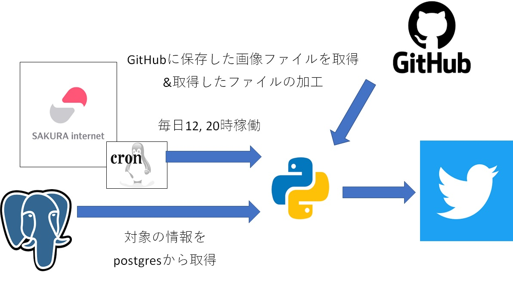
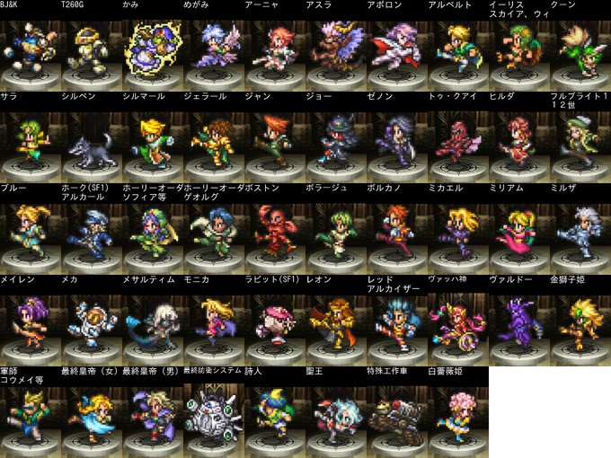
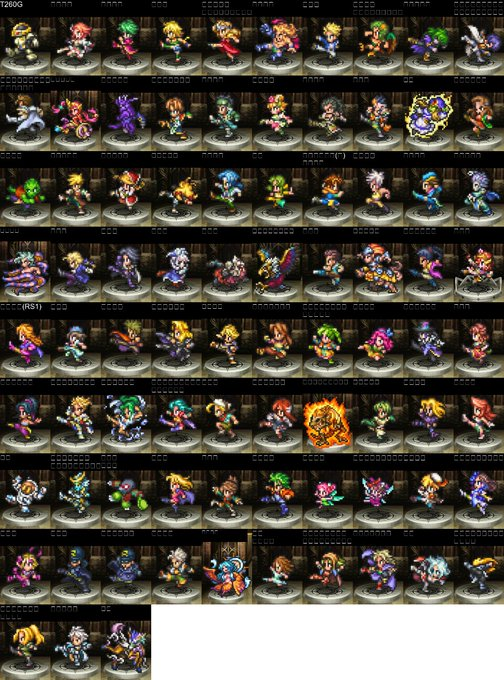
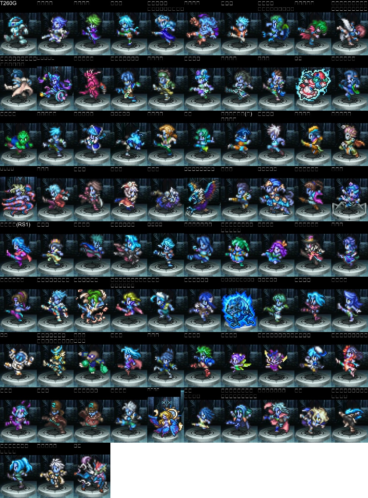

ロマサガRSキャンペーン対象キャラ通知bot
Tweetホーム > 個人開発したことまとめ > キャンペーン対象キャラ通知bot
キャンペーン対象キャラ通知bot
ロマサガRSというゲームで定期的にイベントが開催されるが、イベントの対象キャラが誰なのかがわかり辛過ぎるから作ってみたbot。
作ったもの（実際に稼働したときのツイート）
DBに登録した情報から、イベントの対象キャラを判断してお知らせしてくれるbot
今2022/06/23 11:04
— ロマサガRS 育成応援キャンペーン情報(sagamax_bot2) (@sagamax_bot2) June 23, 2022
【陽】属性の技・術を持つキャラだよ！
画像を添付するからそれで確認してね！ pic.twitter.com/b4Z54aRYxI
どんな仕組み？

- ①時間になったらcronでpythonプログラムを起動
- ②DB(postgres)から対象キャラクタの情報を取得
- ③Githubに保存した画像ファイルを取得＆取得したファイルの加工
- ④ツイート実行
イベント情報をDBに登録する作業は手動だが、それさえやってしまえば、イベントキャンペーンの対象キャラを毎日お知らせしてくれる。
↓GitHub上に以下のようなキャラクタの画像を全キャラ分格納しているので、

その際、対象キャラの名前を画像に書き、各画像のサイズを合わせたうえで合成している（サイズが揃ってないとエラーになる）。
対象キャラの画像を拾ってきてそれらを合成して↓以下のような1枚の画像に合成している。

決まった文字や画像を呟くだけのbotなら以下の記事参照。
pythonソースコード(bot)
pythonのソースコードは以下の通り。SQLの作り方がだいぶイケてないのは目をつぶっていただけると。。。tweetIkuseiCampaign() 関数が処理の入口。
処理の流れは以下の通り。
- GitHubから画像ファイル読み込み
- 画像上部を黒四角で塗りつぶし
- 塗りつぶした部分に日本語を書く（キャラ名）
- 画像サイズを調整（揃えないとエラーで結合できない）
- 横方向に連結（端数に白い画像を連結）
- 縦方向に連結
ややこしいけど、Pillow は、開発が停止したPILをForkしたもの。インストール時は pip install pillow で、コードの import は PIL.
黒四角で塗りつぶす処理は、こちらの「画像の中に四角形を描く」の部分を参考にした。
ぶつかった壁とか学んだこととか
①画像に日本語を埋め込めない
OpenCV という python のライブラリを使って画像編集している記事があったので、それを参考にした。OpenCVで日本語テキストを表示させようとすると文字化けしてうまくいかなかった（OpenCV の仕様）ので、PillowとOpenCVを併用した（※）。
大まかな処理の流れは以下の通り。
- 画像ファイル読み込み(Pillow)
- 読み込んだ画像上部を黒四角で塗りつぶし(Pillow)
- 塗りつぶし部分に日本語テキストを表示(Pillow)
- 画像サイズを調整(OpenCV)
- 各画像を1つに連結(OpenCV)
※全部Pillowでやればよかったんだろうけど、書いた当時はよくわかってなかった。この併用が次の問題につながる。
②妙な色の画像を生み出してしまう
正しい画像

妙な色の画像

Pillowでは色の順番はRGB（赤、緑、青）を前提としている。
OpenCVは色の順番はBGR（青、緑、赤）。
Pillow で読み込んだ画像を OpenCV に渡す際に赤と青が逆転した結果こうなった。Pillow から OpenCV に渡す際に RGB から BGR に変換することで対処（下記コード参照）。
また、OpenCV は 画像を Numpy の配列として扱っているため、 OpenCV に渡す前に np.array(readDot) でNumPy の配列に変換している。
このため、 Numpy というライブラリをインポートしている。
Pillow, Numpy, OpenCV の違いがよくわからなくなってきたが、超個人的主観で凄く雑にまとめると
- Pillow：一番お手軽に使用できる画像処理ライブラリ。
- Numpy： Pillow＋Numpy で Pillow 単体よりはもうちょっと複雑なことができる。
- OpenCV： OpenCV＋Numpy の組み合わせが一番いろいろな事ができる。顔認識もできるらしいが、環境構築がちょっと面倒。
というイメージ（参考）。
コンテナ化した際、 OpenCV が使えるようにするためにひと手間加える必要があったので実際準備に多少手間がかかってる。やりたいこと次第でもっと手間は増えると思われる。
参考
- Python, OpenCVでBGRとRGBを変換するcvtColor
- 画像処理をマスターしよう！PythonでOpenCVを使う方法を紹介！
- Pythonの画像処理ライブラリPillow(PIL)の使い方
- [Python] OpenCVでは日本語テキストを描画できない – PIL/pillowでテキスト表示
- 画像にテキストを書き込む方法
- Python OpenCV の cv2.imread 及び cv2.imwrite で日本語を含むファイルパスを取り扱う際の問題への対処について
- Pythonで画像にテキストを入れて複数のアイキャッチを一括で作るプログラム
③日本語フォントが入ってない
ローカルで動いたプログラムを linux 環境に持って行って動かしたら、画像に書き込んだ日本語が文字化けした。
下記コマンドで日本語フォントをインストールして、使用するフォントをプログラムで指定することで解消した。
フォントの指定箇所
参考